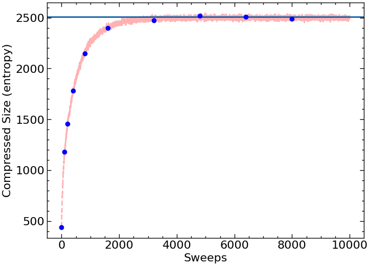

Cellular Automata#
Solution Template: https://docs.google.com/document/d/1XfuSZoOJqSgL_hP7vCQFfOfQAJBNMqMz6Bc9wS3Nxm8/edit?usp=sharing
References#
Wikipedia article on cellular automata.
Wikipedia article on a famous example of a cellular automaton, Conway’s game of life.
Cellular Automata#
One of the key goals of computational physics is to model physical systems. We want to begin with the most abstract representation of a physical system.
You have a state of the system and you have some rules to update the state. In classical physics, the rules are always local. (This is even true in E&M as you can write things in terms of local fields; we will see when we get to quantum computing, that in quantum mechanics this locality rules break down).
If your goal is to write down a model which captures these simple principles, cellular automata are the simplest way to do this. In cellular automata you have a bunch of grid points (say on a square or a honeycomb) and you have some local rules to update these cells.
Depending on how you choose these rules, you can get simplified models of various different phenomena.
A Simple Automata for Diffusing Gas#
One of the principles of computational physics is that we can often see universal behavior from simple microsocopic rules. We are going to start by writing down a simple cellular automata for the diffusion of gas in a room. From this cellular automata we are going to measure entropy as a function of time.
In our automata, you have two colors (black and white). You can treat the black color as the gas and the white color as empty space.
Our state, then, is going to be where the gas and empty space is.
We will start with the right half of the system filled with gas and the left half empty (i.e. the right half is black and the left half is white).
The rule then for a single step is:
randomly select a pair of nearest-neighbors sites.
A nearest-neighbor site is one which is up, down, left, or right.
swap those two sites (even if they are the same color).
Every time you follow the rule you should count it as a time step (even if you swap a white site with another white site).
Here we will use open boundary conditions (i.e. the top and the bottom don’t wrap). You need to be careful when you select the pair of sites that you never try to select a site that is “out of memory”. You need to think also how to select a pair at random given these boundary conditions (although in practice you won’t get qualitatively wrong results if your probabilities of selecting at the boundary are slighty off)
Make sure that every step you’re taking has a computational complexity of O(1) and not a computational complexity of O(\(L^2\)) - i.e. don’t copy your whole array each time.
In this simulation, the natural unit of time is a sweep: doing \(L^2\) different swaps. It is most natural then to have two nested loops
Loop over sweeps
Loop over \(L^2\) steps per sweep.
Write code that implements this cellular automata and generates a snapshop of configuration plt.imshow(state) on sweeps recordSweeps=[0,100,200,400,800,1600,3200,4800,6400,8000]
Your final results should be on a 100 x 100 lattice. You may want to start on a 50x50 lattice the first time you do the simulation because it will be faster.
Storing your state
To store your state a good option is state=numpy.zeros((100,100))
which you can then intialize like state[0:100,0:50]=1
which you can then access like state[i,j]
Random Numbers
For random numbers you can use np.random
This is not necessary but in python, it speeds things up if you choose all your random numbers for a sweep at once. For example, if you do nx_rand=np.random.randint(0,99,L**2) it will give you \(100^2\) random numbers at once.
I can get 10,000 sweeps to happen in about 3 minutes on google colab.
Storing your state
To store your state a good option is
vector<vector<int > > state;
which you can then intialize like
state.resize(100);
for (int i=0;i<state.size();i++){
state[i].resize(100);
// This below sets it all to zero.
// You might want to do something fancier
// to initialize half black and half white.
std::fill(state[i].begin(), state[i].end(), 0);
}
which you can then access like state[i][j];
Random Numbers
For random numbers you want to use the C++11 random numbers. Take a look at this stack exchange article. Concerning that article, the general rule is:
Call these once per program
std::random_device rd;
std::mt19937 mt(rd());
Call this once or many times (it’s cheap and doesn’t reset the randomness):
std::uniform_int_distribution dist(0,100);
and then use
dist(mt)
to actually get the random numbers.
Grading
Include the microscopic snapshots from your simulation.
Entropy#
Entropy is essentially a measure of how “random” a state is. The more random a state, the more entropy it should have. A state where the “gas” is randomly placed is going to have the highest entropy. There are various ways then of measuring entropy. One approach is to take a configuration and ask how easy it is to compress it. If it compresses efficiently then it has low entropy. If it’s completely “random” then it’s hard to compress and has high entropy. After you’ve produced configurations (in memory or as a file), go ahead and load the configuration using python, compress the state, and measure its size as a function of time. This will be our heurestic for the entropy of the state (if a state is very disordered, it should be hard to describe compactly).
A more formal discussion of entropy
Above we discussed compression size as a heurestic for entropy. Here we will say something slightly more formal. In physics, we treat Boltzmann entropy as \(\ln \Omega_i\) where \(\Omega_i\) is the number of microstates that correspond to a given macrostate or, more generally \(\sum_i p_i \ln(p_i)\) where we have microstates happening with probability \(p_i\). For this to make sense, we have to then have a probability distribution over microstates. In this case, the “right” probability distribution for this non-equilibrium process would really to be to run the time-evolution of our diffusing gas many times and use the probability distribution \(p_i(t)\) at step \(t\) over these different runs.
Separately, in compressing states, one can prove that the optimal compression algorithm will compress a string (representing our microstate in this case) with a size that goes as \(\sum_i p_i \ln p_i\) where \(p_i\) is the probability that the compression algorithm is going to have to compress string \(i\).
It is this sense where the compressed size and the Boltzmann entropy should correspond. There are two (reasonable but not fully true) additional assumptions being made
That gzip is compressing optimally. This is generically not true but it’s probably not too bad.
Our compression algorithm only sees one string at time t, not the full set of strings \(i\) with their respectively likelihood \(p_i(t)\) that it might need to compress. We are therefore assuming that the compression algorithm it is selecting having seen only one string is the same if it had seen all the strings (and know their respective weights). (One could think of this assumption as assuming that the probability distribution over space and time are interchangable.) It turns out that this is roughly true as well given our string sizes.
If your configuration state is a numpy array, you can do
sys.getsizeof(gzip.compress(state.tobytes()))
to get the size of the compressed state.
Alternatively, if your configuration state is stored as a long string, you can use
sys.getsizeof(gzip.compress(bytes(state,'utf-8')))
Run your automata for 10,000 sweeps and graph the entropy as a function of sweeps. You can take a point at the same sweep number you used for configurations. Additionally, draw a horizontal line for the equilbrium entropy of a randomly placed \(100^2/2\) black cells in a white background (you will need to think how to generate this).
Grading
Graph of entropy vs. sweeps including equilibrium line.
The graph should look like this (with the dots - the red line is there to show what what things look like if you plotted after every sweep):

To produce this graph I’m using pylab. Please make sure you label your axes. To produce the snapshots you probably want to use something like pylab.matshow(myArray).
Nothing below on this page is required
Interacting lattice Gases#
We can generalize our original lattice gas cellular automaton a bit by adding interactions between the atoms. This gives us a more realistic model of a gas. We can also look at how entropy increases in the interacting system and compare it with the entropy in the non-interacting system.
Cellular Automata for Fluids#
Not only can cellular automata be used to model gases, they can also be used to model fluids. By designing a cellular automaton with simple rules based on a cartoon model of molecular dynamics, you can obtain, from a non-microscopic viewpoint, dynamical behavior that mimics fluid flow. It coarse-grains to the Naiver-Stokes equations of motion.
A particular cellular automaton that does this is known at the lattice gas FHP model. The sites of the automaton are arranged on a triangular lattice (with hexagonal symmetry) and each site has six possible states. If you’re feeling ambitious this is really cool and you should try to implement it. An explanation of the FHP model can be found in Section 3.2 of this book.
This approach is the precurser to the lattice-boltzmann method which was implemented in Introduction to Computational Physics.
Extra Credit
20 points extra credit (btw: this is more difficult then the extra-credit is worth)
Implement an FHP model for fluid dynamcis and simulate fluid flow using it.
Cellular Automata to get something that looks like Ameoba#
You can check out this work which uses a continuous version of cellular automata to make a model of creatures that appear like ameoba: https://arxiv.org/pdf/1812.05433.pdf